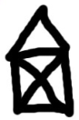
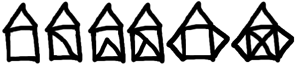

8. Iteration¶
Computers are often used to automate repetitive tasks. Repeating identical or similar tasks without making errors is something that computers do well and people do poorly.
Repeated execution of a set of statements is called iteration. Because iteration is so common, Python provides several language features to make it easier. We’ve already seen the for each pattern in the previous chapter. In this chapter we will explore additional techniques that add power to for each loops. In addition we will investigate another type of loop pattern called the counting loop. Between for each loops and counting loops, you will be able to solve most of your iteration needs. The odd thing thing is that the syntax to use a counter loop or a for each loop is the same, it all revolves around how we use them to solve the problem at hand.
8.1. Reassignment¶
As we have mentioned previously, it is legal to make more than one assignment to the same variable. A new assignment makes an existing variable refer to a new value (and stop referring to the old value).
The output of this program is:
5 7
because the first time bruce is printed, its value is 5, and the second time, its value is 7.
Here is what reassignment looks like in a state snapshot:

With reassignment it is especially important to distinguish between an assignment statement and a boolean expression that tests for equality. Because Python uses the equal token (=) for assignment, it is tempting to interpret a statement like a = b as a Boolean test. Unlike mathematics, it is not! Remember that the Python token for the equality operator is ==.
Note too that an equality test is symmetric, but assignment is not. For example, if a == 7 then 7 == a. But in Python, the statement a = 7 is legal and 7 = a is not.
Furthermore, in mathematics, a statement of equality is always true. If a == b now, then a will always equal b. In Python, an assignment statement can make two variables equal, but because of the possibility of reassignment, they don’t have to stay that way:
The third line changes the value of a but does not change the value of b, so they are no longer equal. (In some programming languages, a different symbol is used for assignment, such as <- or :=, to avoid confusion. Python chose to use the tokens = for assignment, and == for equality. This is a popular choice also found in languages like C, C++, Java, and C#.)
8.2. Updating variables¶
When an assignment statement is executed, the right-hand-side expression (i.e. the expression that comes after the assignment token) is evaluated first. Then the result of that evaluation is written into the variable on the left hand side, thereby changing it.
One of the most common forms of reassignment is an update, where the new value of the variable depends on its old value.
Line 2 means get the current value of n, multiply it by three and add one, and put the answer back into n as its new value. So after executing the two lines above, n will have the value 16.
If you try to get the value of a variable that doesn’t exist yet, you’ll get an error:
>>> w = x + 1 Traceback (most recent call last): File "<interactive input>", line 1, in NameError: name 'x' is not defined
Before you can update a variable, you have to initialize it, usually with a simple assignment:
>>> x = 0 >>> x = x + 1
This second statement — updating a variable by adding 1 to it — is very common. It is called an increment of the variable; subtracting 1 is called a decrement. Sometimes programmers also talk about bumping a variable, which means the same as incrementing it by 1.
8.3. Summation¶
Let us write a function now to sum up all the elements in a list of numbers. Do this by hand first, and try to isolate exactly what steps you take. You’ll find you need to keep some “running total” of the sum so far, either on a piece of paper, or in your head. Remembering things from one step to the next is precisely why we have variables in a program: so we’ll need some variable to remember the “running total”. It should be initialized with a value of zero, and then we need to traverse the items in the list. For each item, we’ll want to update the running total by adding the next number to it.
This technique is know as an accumulator. The running_total accumulates the anser.
8.4. Accumulators, Now for Sequences¶
The concept of adding up numbers can also be applied to sequences. Recall that the + operation performs concatenation of sequences. Study the following program that creates a list of strings from user input.
The accumulator is initialized to an empty list []. Through each loop, the computer gets a new input and updates the list. Note that in line 4, word is placed in brackets to first make it a list before it can be concatenated to the accumulator.
8.5. Accumulation Algorithm¶
Let us formalize the accumulator algorithm we studied in the last sections. An accumulator has three critical elements, that must be done in order:
- Initialize an accumulator
- Use a loop
- Update the accumulator
- We must initialize an accumulator first. The initialization should be appropriate to what we will use the accumulator for. If we are summing, 0 may be appropriate. If we are multiplying, 1 is usually a good choice. Sequence accumulators will usually start with an empty sequence such as "" or [].The initialization must occur before the loop. Otherwise, the accumulator will be reset after every iteration. No accumulation would occur.
- A loop should be used to create repetition that allows us to find new values to accumulate.
- The update occurs within the body of the loop. Accumulation usually has the form acc=acc+change. One way to think of this is that “the new accumulator is equal to the old accumulator plus the change.” Take care to insure that your accumulator has the same type as the change you are adding. Numbers are added to numbers; lists are added to lists.
8.6. Abbreviated assignment¶
Incrementing a variable is so common that Python provides an abbreviated syntax for it:
>>> count = 0 >>> count += 1 >>> count 1 >>> count += 1 >>> count 2
count += 1 is an abbreviation for count = count + 1 . We pronounce the operator as “plus-equals”. The increment value does not have to be 1:
>>> n = 2 >>> n += 5 >>> n 7
There are similar abbreviations for -=, *=, /=, //= and %=:
>>> n = 2 >>> n *= 5 >>> n 10 >>> n -= 4 >>> n 6 >>> n //= 2 >>> n 3 >>> n %= 2 >>> n 1
8.7. Counting Loops¶
We have seen for each loops used to perform an action for each element in a sequence. The second most popular use of a python for loop is to repeat an action a particular number of times. The key to understanding this is that a for loop will run once for each element in the sequence. Observe the following functions that each produce the same output.
In a counting loop, the number of times that the loop runs is more important than what values i will take on. For small number of repetitions, creating an appropriate sequence of values is doable. However, creating a sequence of 1000 items could be troublesome. The Counter loop concept is so commonplace that a function exists to create a list of numbers. range() is a function that produces a list of numbers. (In python 3 range() produces and iterable data type but can be used in much the same way with much greater efficiency.)
8.8. Range¶
Computer scientists use a short hand to describe what functions do and how they can be called. Below is the shorthand for a very important function called range.
range( [start,] stop [,step] )
This is a versatile function to create lists containing arithmetic progressions. It is most often used in for loops. The arguments must be plain integers. If the step argument is omitted, it defaults to 1. If the start argument is omitted, it defaults to 0. The full form returns a list of plain integers [start, start + step, start + 2 * step, ...]. If step is positive, the last element is the largest start + i * step less than stop; if step is negative, the last element is the smallest start + i * step greater than stop. step must not be zero (or else ValueError is raised). (from the python help files)
The first line tells us how to call the range function in our programs. It turns out there are three different ways to call range.
- range(stop)
- range(start, stop)
- range(start, stop, step)
Each successive technique uses more information to give more specific commands to range. If a parameter is not present, the function will use a default setting for that parameter. Note that the square brackets only identify the options to calling the function, they are not used in calling the function. Optional parameters are added in left to right order.
8.9. Number Patterns¶
Sometimes we need a little more out of our loop. It is not just enough to repeat a particular number of times, we also want a particular set of numbers for each time we go through the loop.
The simplest number pattern, and the most common is to iterate with the numbers 0 up to some particular number. Luckily, this is exactly what range() can do.
Through the use of extra parameters on the range function, we can create patterns that start and stop at any number of those that will increment by a constant (i.e. by two), the following code will count from 2 to 20, by multiples of 3.
will produce:
2 5 8 11 14 17
Notice that 20 is not included. The last value 20 is not included (much like ti was not inlcuded when working with slicing operation).
More complex patterns can be accomplished through the use of additional accumulators. Examine the pattern 1,2,4,7,11,16. Through careful analysis we see that the numbers are increasing by an increasing rate: first by one, then by two, then by 3. To solve this, we need an accumulator to keep track of the number we are calculating, and we will use a second accumulator to keep track of the rate in which the first accumulator is increasing.
8.10. Detecting the pattern¶
Detecting the pattern we need to solve for is half of the work in creating a solutions. Lets look at the following image and think how iteration can be used to solve this problem.
A common mistake is to try to determine the parameters of the for loop in one step. This usually leads to a case of blank page syndrome. When working with repetition you often need to take a step back and figure out how you would solve the problem “by hand” without iteration. Write out three of the iterations by hand. Like we see below:
Once we take this step, we can see the pattern, the y’s increase by 30 each time. It is sometimes beneficial to create a test program to get the pattern right.
Once you have solved the pattern it is easier to incorporate it into a solution.
Some patterns are more difficult, take this example where we wish to draw the box across the screen and growing progressively bigger.
At first glance this is very daunting, but we will use our rule of three to find the pattern:
We see that there are actually two patterns here. One pattern for the values of x and another for the widths of the rectangles. The widths are doubling each time and can be accomplished with an accumulator. The x values are increasing based on the widths of all the previous widths. A second accumulator will be needed to keep track of the x’s.
Finally we can add pygame functions to draw the rectangles.
8.11. Tracing a program¶
To write effective computer programs a programmer needs to develop the ability to trace the execution of a computer program. Tracing involves becoming the computer and following the flow of execution through a sample program run, recording the state of all variables and any output the program generates after each instruction is executed.
To understand this process, let’s trace the call to generate the squares from the previous section.
At the start of the trace, we have a 3 local variables, width,``x``,``i`` with initial values of 10, 0, 0 respectivly. It is also a good idea to keep track of the range(5) return value as well. One the firs tpass throught he loop we will print out th einitial values of x and width and update them.
To keep track of all this as you hand trace a program, make a column heading on a piece of paper for each variable created as the program runs and another one for output. Our trace so far would look something like this:
| width | x | i | range(5) | output printed so far |
|---|---|---|---|---|
| 10 | 0 | 0 | [0,1,2,3,4] | 0 10 |
| 20 | 10 |
Since i has not taken on all of the vlaues generated by range(5), the loop will continue.
| width | x | i | range(5) | output printed so far |
|---|---|---|---|---|
| 10 | 0 | 0 | [0,1,2,3,4] | 0 10 |
| 20 | 10 | 1 | 10 20 | |
| 40 | 30 | 2 | 30 40 | |
| 80 | 70 | 3 | 70 80 | |
| 160 | 150 | 4 | 150 160 |
Tracing can be a bit tedious and error prone (that’s why we get computers to do this stuff in the first place!), but it is an essential skill for a programmer to have. From this trace we can learn a lot about the way our code works.
Tracing a program is, of course, related to single-stepping through your code and being able to inspect the variables. Using the computer to single-step for you is less error prone and more convenient. Also, as your programs get more complex, they might execute many millions of steps before they get to the code that you’re really interested in, so manual tracing becomes impossible. Being able to set a breakpoint where you need one is far more powerful. So we strongly encourage you to invest time in learning using to use your programming environment (IDLE, in these notes) to full effect.
There are also some great visualization tools becoming available to help you trace and understand small fragments of Python code. The one we recommend is at http://netserv.ict.ru.ac.za/python3_viz
We’ve cautioned against chatterbox functions, but used them here. As we learn a bit more Python, we’ll be able to show you how to generate a list of values to hold the sequence, rather than having the function print them. Doing this would remove the need to have all these pesky print functions in the middle of our logic, and will make the function more useful.
8.12. Glossary¶
- algorithm
- A step-by-step process for solving a category of problems.
- body
- The statements inside a loop.
- breakpoint
- A place in your program code where program execution will pause (or break), allowing you to inspect the state of the program’s variables, or single-step through individual statements, executing them one at a time.
- bump
- Programmer slang. Synonym for increment.
- counter
- A variable used to count something, usually initialized to zero and incremented in the body of a loop.
- cursor
- An invisible marker that keeps track of where the next character will be printed.
- decrement
- Decrease by 1.
- definite iteration
- A loop where we have an upper bound on the number of times the body will be executed. Definite iteration is usually best coded as a for loop.
- development plan
- A process for developing a program. In this chapter, we demonstrated a style of development based on developing code to do simple, specific things and then encapsulating and generalizing.
- encapsulate
- To divide a large complex program into components (like functions) and isolate the components from each other (by using local variables, for example).
- escape sequence
- An escape character, \, followed by one or more printable characters used to designate a nonprintable character.
- generalize
- To replace something unnecessarily specific (like a constant value) with something appropriately general (like a variable or parameter). Generalization makes code more versatile, more likely to be reused, and sometimes even easier to write.
- increment
- Both as a noun and as a verb, increment means to increase by 1.
- infinite loop
- A loop in which the terminating condition is never satisfied.
- indefinite iteration
- A loop where we just need to keep going until some condition is met. A while statement is used for this case.
- initialization (of a variable)
- To initialize a variable is to give it an initial value. Since in Python variables don’t exist until they are assigned values, they are initialized when they are created. In other programming languages this is not the case, and variables can be created without being initialized, in which case they have either default or garbage values.
- iteration
- Repeated execution of a set of programming statements.
- loop
- A statement or group of statements that execute repeatedly until a terminating condition is satisfied.
- loop variable
- A variable used as part of the terminating condition of a loop.
- meta-notation
- Extra symbols or notation that helps describe other notation. Here we introduced square brackets, ellipses, italics, and bold as meta-notation to help describe optional, repeatable, substitutable and fixed parts of the Python syntax.
- middle-test loop
- A loop that executes some of the body, then tests for the exit condition, and then may execute some more of the body. We don’t have a special Python construct for this case, but can use while and break together.
- nested loop
- A loop inside the body of another loop.
- newline
- A special character that causes the cursor to move to the beginning of the next line.
- post-test loop
- A loop that executes the body, then tests for the exit condition. We don’t have a special Python construct for this, but can use while and break together.
- pre-test loop
- A loop that tests before deciding whether the execute its body. for and while are both pre-test loops.
- reassignment
- Making more than one assignment to the same variable during the execution of a program.
- single-step
- A mode of interpreter execution where you are able to execute your program one step at a time, and inspect the consequences of that step. Useful for debugging and building your internal mental model of what is going on.
- tab
- A special character that causes the cursor to move to the next tab stop on the current line.
- trichotomy
- Given any real numbers a and b, exactly one of the following relations holds: a < b, a > b, or a == b. Thus when you can establish that two of the relations are false, you can assume the remaining one is true.
- trace
- To follow the flow of execution of a program by hand, recording the change of state of the variables and any output produced.
8.13. Exercises¶
This chapter showed us how to sum a list of items, and how to count items. The counting example also had an if statement that let us only count some selected items. In the previous chapter we also showed a function find_first_2_letter_word that allowed us an “early exit” from inside a loop by using return when some condition occurred. We now also have break to exit a loop (but not the enclosing function, and continue to abandon the current iteration of the loop without ending the loop.
Composition of list traversal, summing, counting, testing conditions and early exit is a rich collection of building blocks that can be combined in powerful ways to create many functions that are all slightly different.
The first six questions are typical functions you should be able to write using only these building blocks.
Write a function to count how many odd numbers are in a list.
Sum up all the even numbers in a list.
Sum up all the negative numbers in a list.
Count how many words in a list have length 5.
Sum all the elements in a list up to but not including the first even number. (Write your unit tests. What if there is no even number?)
Count how many words occur in a list up to and including the first occurrence of the word “sam”. (Write your unit tests for this case too. What if “sam” does not occur?)
Add a print function to Newton’s sqrt function that prints out better each time it is calculated. Call your modified function with 25 as an argument and record the results.
Trace the execution of the last version of print_mult_table and figure out how it works.
Write a function print_triangular_numbers(n) that prints out the first n triangular numbers. A call to print_triangular_numbers(5) would produce the following output:
1 1 2 3 3 6 4 10 5 15
(hint: use a web search to find out what a triangular number is.)
Write a function, is_prime, which takes a single integer argument and returns True when the argument is a prime number and False otherwise. Add tests for cases like this:
test(is_prime(11), True) test(is_prime(35), False) test(is_prime(19911129), True)
The last case could represent your birth date. Were you born on a prime day? In a class of 100 students, how many do you think would have prime birth dates?
Revisit the drunk student problem from the exercises in chapter 3. This time, the drunk student makes a turn, and then takes some steps forward, and repeats this. Our social science student now records pairs of data: the angle of each turn, and the number of steps taken after the turn. Her experimental data is [(160, 20), (-43, 10), (270, 8), (-43, 12)]. Use a turtle to draw the path taken by our drunk friend.
Many interesting shapes can be drawn by the turtle by giving a list of pairs like we did above, where the first item of the pair is the angle to turn, and the second item is the distance to move forward. Set up a list of pairs so that the turtle draws a house with a cross through the centre, as show here. This should be done without going over any of the lines / edges more than once, and without lifting your pen.
Not all shapes like the one above can be drawn without lifting your pen, or going over an edge more than once. Which of these can be drawn?
Now read Wikipedia’s article(http://en.wikipedia.org/wiki/Eulerian_path) about Eulerian paths. Learn how to tell immediately by inspection whether it is possible to find a solution or not. If the path is possible, you’ll also know where to put your pen to start drawing, and where you should end up!
What will num_digits(0) return? Modify it to return 1 for this case. Why does a call to num_digits(-24) result in an infinite loop? (hint: -1//10 evaluates to -1) Modify num_digits so that it works correctly with any integer value. Add these tests:
test(num_digits(0), 1) test(num_digits(-12345), 5)
Write a function num_even_digits(n) that counts the number of even digits in n. These tests should pass:
test(num_even_digits(123456), 3) test(num_even_digits(2468), 4) test(num_even_digits(1357), 0) test(num_even_digits(0), 1)
Write a function sum_of_squares(xs) that computes the sum of the squares of the numbers in the list xs. For example, sum_of_squares([2, 3, 4]) should return 4+9+16 which is 29:
test(sum_of_squares([2, 3, 4]), 29) test(sum_of_squares([ ]), 0) test(sum_of_squares([2, -3, 4]), 29)
You and your friend are in a team to write a two-player game, human against computer, such as Tic-Tac-Toe / Noughts and Crosses. Your friend will write the logic to play one round of the game, while you will write the logic to allow many rounds of play, keep score, decide who plays, first, etc. The two of you negotiate on how the two parts of the program will fit together, and you come up with this simple scaffolding (which your friend will improve later):
1 2 3 4 5 6 7 8 9 10 11 12 13 14 15 16 17
# your friend will complete this function def play_once(human_plays_first): """ Must play one round of the game. If the parameter is True, the human gets to play first, else the computer gets to play first. When the round ends, the return value of the function is one of -1 (human wins), 0 (game drawn), 1 (computer wins). """ # This is all dummy scaffolding code right at the moment... import random # see ch 10 for details rng = random.Random() # pick a random result between -1 and 1. result = rng.randrange(-1,2) print("Human plays first={0}, winner={1} " .format(human_plays_first, result)) return result
- Write the main program which repeatedly calls this function to play the game, and after each round it announces the outcome as “I win!”, “You win!”, or “Game drawn!”. It then asks the player “Do you want to play again?” and either plays again, or says “Goodbye”, and terminates.
- Keep score of how many wins each player has had, and how many draws there have been. After each round of play, also announce the scores.
- Add logic so that the players take turns to play first.
- Compute the percentage of wins for the human, out of all games played. Also announce this at the end of each round.
- Draw a flowchart of your logic.